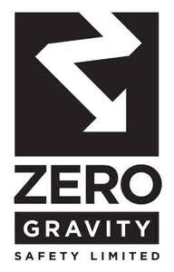
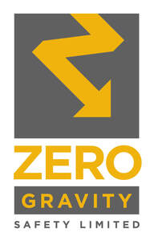

Trade Mark Journal No.2025/021 23 May 2025
UK00004199739 7 May 2025 (35,37,41,42,45)
Mark 1

Mark 2

- Class 35
- Advertising; marketing; sales promotions; online ordering services; retail services and wholesale services connected with the sale of safety equipment for the rescue of people or animals or property, protective and safety equipment, safety, security, protection and signalling devices, cables, safety lines, tripods, metal clips, protective helmets, eyewear, and visors, protective footwear, clothing and headwear for prevention of accident or injury, gloves for protection against injury, lanyards for safety purposes for fall protection, climbing ropes, ladders, crampons for climbing, climbing equipment, tape measures, small items of metal hardware, metal karabiners, metal barriers, masts of metal, emergency and rescue tools, hand tools and implements (hand operated), power tools, tool belts, tool bags, bags, rucksacks, carrying cases, emergency and rescue machines and machine tools, pulleys, block and tackle, winches, safety manual hoists, hoists, lifting apparatus, jib cranes, lifting apparatus, mobile platforms (lifting, electric, hydraulic), lifting platforms, access platforms (mechanical), elevating or lifting work platforms and towers (including mobile), props not of metal, lifesaving harness, life-saving apparatus and equipment, cable harnesses, harness not of metal for handling loads, slings and bands, non-metallic ladders, ropes and synthetic ropes, bungie cords, buckets, evacuation chairs, stretchers, parts and fittings for the aforesaid goods; business management; business administration; business information; business assistance; commercial information; office functions; computerised data verification; database management services; data processing; data management; information, consultancy and advisory services relating to all the aforesaid services.
- Class 37
- Installation, maintenance and repair of safety equipment; advisory services relating to the installation of security and safety equipment; construction; building; installation maintenance and repair of safety barriers; hire, rental, leasing, maintenance and repair of access platforms (mechanical), powered and manual lifting and mechanical access equipment, aerial work platforms; hire, rental, leasing, maintenance and repair of lifting apparatus and aerial work platforms; consultancy, information and advisory services to all the aforesaid services.
- Class 41
- Education; training; coaching; sporting and cultural activities; publishing; arranging and conducting workshops, conferences, seminars, awards and competitions; entertainment; arranging and hosting educational, training, coaching, sports, cultural and entertainment events; video, audio, audio-visual, film, podcast, webinar and documentary production; consultancy, information and advisory services relating to all the aforesaid services.
- Class 42
- Design services; technical advice relating to safety; safety testing relating to lifting equipment; safety testing of products; inspection of safety apparatus and equipment; consultancy, information and advisory services relating to all the aforesaid services.
- Class 45
- Rental of equipment for safety, rescue, security and enforcement; health and safety risk management; health and safety risk assessment services; safety evaluation; consulting in the field of workplace safety; reviewing standards and practices to assure compliance with laws and regulations; legal services; consultancy, information and advisory services relating to all the aforesaid services.
Zero Gravity Safety Limited
Representative: Trademark Eagle Limited